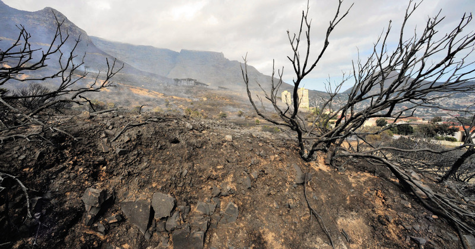

<div class="container">
  <div id="contents" class="col-md-12 main-content"><h1 xmlns="http://www.w3.org/1999/xhtml" id="toc-id-0">Noodtoestande</h1>
    <p xmlns="http://www.w3.org/1999/xhtml" class="x--Body-opener">In hierdie hoofstuk gaan jy leer oor hoe natuurrampe en oorloë mense se lewens kan ontwrig. Mense
moet soms in sulke omstandighede uit nood hul huise verlaat. Mens sê dan dat hulle vlugtelinge is.
Jy gaan leer hoe veilige, tydelike skuilings vir vlugtelinge geskep word en hoe noodlenigingswerkers
hulle van kos en water voorsien.</p>
    
<figure xmlns="http://www.w3.org/1999/xhtml">
    <p class="x--Body-Text"><span></span></p>
<figcaption>
    <p class="x--caption para-style-override-1">Figuur 1: Hierdie familie moes uit nood hul huis verlaat, en benodig nou ’n veilige plek
om te bly totdat hulle na hul huis kan terugkeer.</p></figcaption>
</figure><figure xmlns="http://www.w3.org/1999/xhtml">
    <p class="x--Body-Text"><span></span></p>
<figcaption>

    <p class="x--caption para-style-override-1">Figuur 2: Verwoestende brande is een soort ramp wat
gemeenskappe kan tref.</p></figcaption>
</figure>
    <h2 xmlns="http://www.w3.org/1999/xhtml" id="toc-id-1">Omstandighede wat vooroorsaak dat mense vlugtelinge word</h2>
    <p xmlns="http://www.w3.org/1999/xhtml" class="x--Body-text-1-3">’n Noodtoestand kan
    veroorsaak dat ’n groot aantal mense hulle huise moet verlaat.
    Dit benïvloed nie net die mense wat hulle huise moes
    verlaat nie, maar ook die mense in die gebiede waar die
    <b>vlugtelinge</b> tydelik
    gehuisves word. Mense het skuiling, water en kos nodig. ’n
    Vlugtelingekamp moet opgerig word, en hierdie kamp moet goed
    beplan wees.</p>

<p xmlns="http://www.w3.org/1999/xhtml" class="x--Body-indent"><span>’n Noodtoestand kan veroorsaak
    dat ’n groot</span><span>aantal mense hulle huise moet verlaat.
    Dit benïvloed</span><span>nie net die mense wat
    hulle huise moes verlaat nie,</span><span>maar ook die mense in
    die gebiede waar die vlugtelinge tydelik gehuisves word. Mense
    het skuiling, water en kos nodig. ’n Vlugtelingekamp moet
    opgerig word, en hierdie kamp moet goed beplan wees</span>.</p>

    <p xmlns="http://www.w3.org/1999/xhtml" class="x--Body-indent">In hierdie les gaan jy leer oor noodtoestande en jy gaan maniere ondersoek om
vlugtelinge te help
    </p>

    <div xmlns="http://www.w3.org/1999/xhtml" class="aside">
      <p class="x--Body-box-no-indent"><b>Vlugtelinge:</b> ense wat
      hulle huise moes verlaat tydens ’n ramp of ’n ander
      noodtoestand. Soms vlug mense na veilige areas wat naby hulle
      huise is. In ander gevalle moet hulle ver reis na ’n veilige
      plek partykeer selfs na ’n ander
      land.</p>
    </div>
<p xmlns="http://www.w3.org/1999/xhtml"><b>Oorlog</b></p>

<p xmlns="http://www.w3.org/1999/xhtml">Vanaf die vroegste tye was daar regoor oor die wêreld oorloë tussen mense.
Terwyl weermagte veldslae veg, word mense gedwing om uit hulle dorpe en stede
te vlug. Oor die eeu heen het baie mense as vlugtelinge in vreemde plekke beland.
Daar is selfs vandag meer as 3,8 miljoen vlugtelinge regoor oor Afrika. Hierdie
mense is van hul huise verdryf as gevolg van oorloë.</p>

<figure xmlns="http://www.w3.org/1999/xhtml">
    <p class="x--Body-Text"><span></span> </p>
<figcaption>
    <p class="x--caption">Figuur 3: Hierdie vlugtelingekamp is vir Rwandese vlugtelinge opgestel gedurende die oorlog in hul land in 1994.</p>
</figcaption></figure>
    <p xmlns="http://www.w3.org/1999/xhtml" class="x--Body--above"><span class="char-style-override-3"><b>
Natuurrampe
</b></span></p>
   
<p xmlns="http://www.w3.org/1999/xhtml" class="x--Body-indent">
Natuurrampe word deur die natuur veroorsaak en nie deur mense nie. Vloede,
veldbrande, aardbewings en vulkaniese uitbarstings is almal natuurrampe wat
mense kan dwing om hul huise te verlaat.</p>
<figure xmlns="http://www.w3.org/1999/xhtml">
    <p class="x--Body-Text"><span></span> </p>
<figcaption>
    <p class="x--caption">
Figuur 4: Vergelyk die prente hieronder. Hierdie prente is geneem deur ’n satelliet in die buiteruim. Hulle wys dieselfde area in Mosambiek, voor en gedurende die vloed, en dit wys ook hoeveel van die land onder die vloed deurgeloop het.</p>
</figcaption></figure><figure xmlns="http://www.w3.org/1999/xhtml">
    <p class="x--Body-Text"><span></span> </p>
<figcaption>
    <p class="x--caption">Figuur 5: Hierdie satelliet foto van die rampgebied in Mosambiek is
geneem gedurende die vloed.
 </p>
</figcaption></figure>
    <p xmlns="http://www.w3.org/1999/xhtml" class="x--Body-indent para-style-override-3">
Natuurrampe gebeur
normaalweg sonder
enige waarskuwing.
Hulle kan baie vinnig
noodtoestande
veroorsaak. Dit beteken
dat mense onmiddellik
na veiliger areas moet
trek.</p>

    <p xmlns="http://www.w3.org/1999/xhtml" class="x--Body-indent para-style-override-3">In 2000, het ’n
geweldige vloed
Mosambiek getref
en groot areas
landeryvelde verwoes.
Duisende mense het hul plase verloor en is gedwing om na droë grond te vlug. Vlugtelingekampe is in verskeie dele van Mosambiek en ook in
Suid-Afrika opgestel.</p>
<p xmlns="http://www.w3.org/1999/xhtml">Vergelyk die foto’s
hieronder. Hierdie
foto’s is geneem
deur ’n satelliet in
die buiteruim. Hulle
wys dieselfde area in
Mosambiek, voor en
gedurende die vloed,
en dit wys ook hoeveel
van die land onder die
vloed deurgeloop het.
 </p>


    <p xmlns="http://www.w3.org/1999/xhtml" class="x--Body-indent">’n Natuurramp kan ook oor ’n lang periode van tyd plaasvind. In Afrika maak
ons staat op die reën om ons oeste nat te maak, maar die kontinent beleef gereeld
droogtes. Droogtes kan noodtoestande vir boere veroorsaak. Gedurende lang
droogtes kan groot groepe mense forseer word om hul huise en plase te verlaat.
Hierdie mense is dan op soek na kos, water en skuiling en word dan vlugtelinge.</p>
<figure xmlns="http://www.w3.org/1999/xhtml">
    <p class="x--Body-Text"><span></span> </p>
<figcaption>
    <p class="x--caption">Figuur 6: Droogtes in Afrika veroorsaak verwoesting van habitat en die dood van wilde diere.</p>
</figcaption>
</figure>
    <h2 xmlns="http://www.w3.org/1999/xhtml" id="toc-id-2">Probleme wat vlugtelinge aan die begin ervaar</h2>

    <p xmlns="http://www.w3.org/1999/xhtml" class="x--Body-Text">Natuurrampe soos vloede en oorlog gebeur baie skielik. Dit beteken dat mense
hulle huise vinnig moet verlaat. Hierdie vlugtelinge sal nie veel voedsel en water
by hulle hê nie. Hulle sal ook nie die gereedskap of materiaal by hulle hê om
skuilings mee te bou nie.</p>

    <p xmlns="http://www.w3.org/1999/xhtml" class="x--Body-indent"><span>Die tipe noodtoestand sal die <b>groepering van mense</b> in ’n vlugtelingekamp bepaal. Soms sal daar meer mans as vrouens wees. Met ander tye sal daar baie meer babas wat nog nie kan loop nie wees, en ook klein kinders wees. Daar kan ook met tye baie bejaardes wees wat spesiale hulp en versorging nodig het.
 </span></p>
     <div xmlns="http://www.w3.org/1999/xhtml" class="aside">
      <p class="x--Body-box-no-indent"><span class="char-style-override-2"><b>Groepering van mense:</b> Die verskillende tipes mense in groep, soos die jongmense en bejaardes, mans en vrouens, en gestremde mense. </span></p>
    </div>

    <p xmlns="http://www.w3.org/1999/xhtml" class="x--Body-indent-1-3">Byvoorbeeld, gedurende ’n oorlog is daar gewoonlik minder mans by die huis
omdat die mans in die oorlog moet veg. En gedurende droogtes sal babas en
bejaardes dalk makliker omkom, omdat hulle meer kwesbaar is.</p>


    <p xmlns="http://www.w3.org/1999/xhtml" class="x--Body-indent"><span>Verskillende mense het verskillende behoeftes aan voedsel, water en skuiling.
Kinders raak makliker gedehidreer as volwassenes en benodig ook meer hoë-energie voedsel. Bejaardes benodig meer hitte en komberse.
</span></p>

    <h3 xmlns="http://www.w3.org/1999/xhtml">‘n paar vrae vir jou om te beantwoord</h3>

    <p xmlns="http://www.w3.org/1999/xhtml" class="x--Body-investigation-hanging">1. Watter noodtoestande gebeur vinnig en sonder waarskuwing?</p>
    <hr xmlns="http://www.w3.org/1999/xhtml"/><p xmlns="http://www.w3.org/1999/xhtml" class="x--Body-investigation-hanging">2. Vuur, vloede en konflikte soos oorlog, gebeur sonder waarskuwing:</p>

    <p xmlns="http://www.w3.org/1999/xhtml" class="x--Body-investigation-hanging-a-">(a) die groepering van mense in die groep?</p><hr xmlns="http://www.w3.org/1999/xhtml"/>

    

    <p xmlns="http://www.w3.org/1999/xhtml" class="x--Body-investigation-hanging-a-">(b) die hoeveelheid voedsel wat die vlugtelinge by hulle sal hê?</p>

  <hr xmlns="http://www.w3.org/1999/xhtml"/>
    <p xmlns="http://www.w3.org/1999/xhtml" class="x--Body-investigation-hanging-a-">(c) die vermoë van vlugtelinge om hulle eie skuilings te bou?</p>

  <hr xmlns="http://www.w3.org/1999/xhtml"/>
    <p xmlns="http://www.w3.org/1999/xhtml" class="x--Body-investigation-hanging">3. Watter noodtoestande gebeur stadig, oor ’n langer tydperk?</p>
    <hr xmlns="http://www.w3.org/1999/xhtml"/> <p xmlns="http://www.w3.org/1999/xhtml" class="x--Body-investigation-hanging">4. Hoe sal die stadiger noodtoestande die volgende beïnvloed:</p>

    <p xmlns="http://www.w3.org/1999/xhtml" class="x--Body-investigation-hanging-a-">(a) die groepering van vlugtelinge in die groep?</p>

  <hr xmlns="http://www.w3.org/1999/xhtml"/>
    <p xmlns="http://www.w3.org/1999/xhtml" class="x--Body-investigation-hanging-a-">(b) hoeveel voedsel en water sal hulle by hulle hê?</p>

  <hr xmlns="http://www.w3.org/1999/xhtml"/>
    <p xmlns="http://www.w3.org/1999/xhtml" class="x--Body-investigation-hanging-a-">(c) sal hulle hul eie skuilings kan bou of nie?</p>

  <hr xmlns="http://www.w3.org/1999/xhtml"/>
    <p xmlns="http://www.w3.org/1999/xhtml" class="x--Body-investigation-hanging">5. <span>Watter noodtoestande is die moeilikste om op voorbereid te wees? Verduidelik
hoekom jy so sê.
</span></p>

       <hr xmlns="http://www.w3.org/1999/xhtml"/><p xmlns="http://www.w3.org/1999/xhtml" class="x--Body-investigation-hanging">6. Watter noodtoestande is makliker om op voorbereid te wees? Verduidelik
hoekom jy so sê.</p>

       <hr xmlns="http://www.w3.org/1999/xhtml"/> 
    <h2 xmlns="http://www.w3.org/1999/xhtml" id="toc-id-3">Vlugtelinge in ’n vreemde land</h2>

    <p xmlns="http://www.w3.org/1999/xhtml" class="x--Body-Text"><span>Wanneer vlugtelinge in ’n vlugtelingekamp beland, het hulle basiese behoeftes
nodig soos voedsel, skoon water en skuiling. Hierdie basiese behoeftes kan verskaf
word deur die noodlenigingwerkers wat hierdie kampe opstel.
</span></p>

    <p xmlns="http://www.w3.org/1999/xhtml" class="x--Body-indent"><span>In die volgende oefening gaan jy kyk na die ervarings van mense aan beide
kante van die vlugtelinge situasie: die vlugtelinge en die noodlenigingwerkers wat
hulle help.
</span></p>

    <h3 xmlns="http://www.w3.org/1999/xhtml">Situasie: vlugtelinge in ‘n vreemde land</h3>

    <p xmlns="http://www.w3.org/1999/xhtml" class="x--Body-Text"><span>Bespreek eers die situasie wat hieronder beskryf word in groepe van drie of vier,
voordat jy self die vrae beantwoord. Jou antwoorde moet kort paragrawe wees.
</span></p>

    <div xmlns="http://www.w3.org/1999/xhtml" class="note"><p>
      ’n Skielike oorlog het tussen twee klein lande in
sentraal-Afrika uitgebreek en ’n groot aantal mense
moes noodgedwonge na die buurland vlug. Stel
jouself voor hoe dit moet wees om een van die
vlugtelinge te wees, en ook wat die situasie vir die
<b>gasheer</b>land sal wees.</p>
</div>

    <div xmlns="http://www.w3.org/1999/xhtml" class="aside">
      <p class="x--Body-box-no-indent"><b>Gasheer:</b> ’n Persoon wat
voedsel, water en skuiling
aan ’n ander persoon verskaf.
’n Gasheerland is land wat
vlugtelinge van ’n ander land,
help.</p>
    </div>

    <p xmlns="http://www.w3.org/1999/xhtml" class="x--Body-investigation-hanging">1. <span>Hoe dink jy sal die groepering van mense saamgestel wees? Onthou dat dit ’n
oorlog situasie is en dat mense van hulle eie land af weggevlug het. Dink aan
die ouderdomme van die vlugtelinge en skryf neer watter groepe die meeste
sorg en aandag gaan nodig kry.
</span></p>

    <hr xmlns="http://www.w3.org/1999/xhtml"/><p xmlns="http://www.w3.org/1999/xhtml" class="x--Body-investigation-hanging">2. <span>Wat is die behoefte aan skuiling? Onthou dat hulle nie veel van hulle besittings
saam met hulle gebring het nie. Wie gaan aan hulle die skuilings, of die
materiaal om skuilings mee te bou, verskaf?
</span></p>

   <hr xmlns="http://www.w3.org/1999/xhtml"/><p xmlns="http://www.w3.org/1999/xhtml" class="x--Body-investigation-hanging">3. <span>Watter voedsel en voorrade het die vlugtelinge nodig? Onthou dat die
vlugtelinge vir lang tydperke aaneen te voet reis. Dink aan die ouderdom van
die mense. Sal sommiges meer voedsel en water as ander nodig hê, en indien
wel hoekom? Sal sommige van die mense spesiale sorg nodig hê, indien wel
hoekom?
</span></p><hr xmlns="http://www.w3.org/1999/xhtml"/>

   
    
    <h3 xmlns="http://www.w3.org/1999/xhtml">Volgende week</h3>

    <p xmlns="http://www.w3.org/1999/xhtml" class="x--Body-Text"><span>Een van die grootste probleme in vlugtelingekampe is die voorsiening van
voedsame kos. Voedsame kos verskaf al die voedingstowwe wat die liggaam nodig
het om gesond te bly.
</span></p>

    <p xmlns="http://www.w3.org/1999/xhtml" class="x--Body-indent">Dink aan die volgende vrae in voorbereiding op volgende week se les:</p>

    <ul xmlns="http://www.w3.org/1999/xhtml"><li class="x--Body-text-bullet"> 
      <span>Watter voedsel is die maklikste om te verkry in jou area?
</span></li>

      <li class="x--Body-text-bullet"> 
      <span>Watter voedsel is die goedkoopste om te koop in jou area?
</span></li>

      <li class="x--Body-text-bullet"> 
      <span>Watter voedsel sal jy kies om ’n groot groep vlugtelinge in ’n groot
vlugtelingekamp te voed?
</span></li>
    </ul>
    
    
    
  </div>
</div>